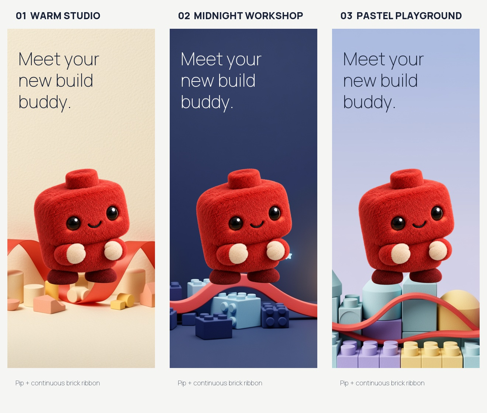

APP STORE CONNECT DRAFT · 1.0.2 (4)
New previews, Pip icon, and refreshed listing copy.Not submitted. Awaiting your approval.
24 seconds of the real app with original music generated on fal.ai.
Warm Studio is the selected direction. Midnight Workshop and Pastel Playground are also included.

A separate mascot clip, included for your review.